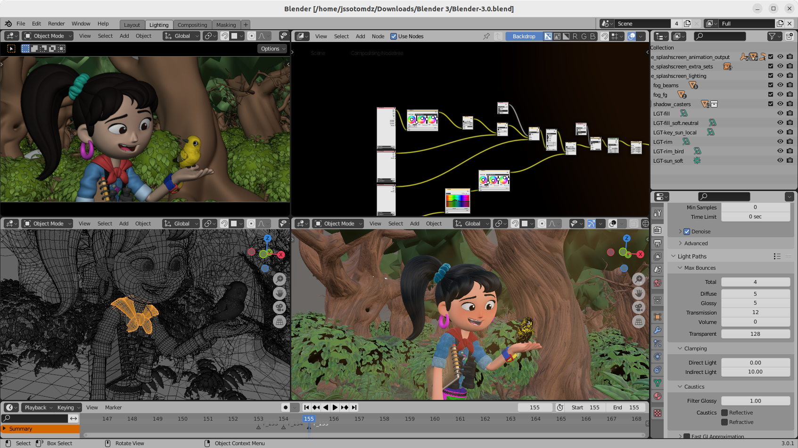

|
Verbeter uw creativiteit Of u een animator, ontwerper, videomaker of game-ontwikkelaar bent, u kunt uw workflows eenvoudig naar Ubuntu Budgie brengen met ondersteuning voor open source en industriestandaardsoftware en -applicaties. Blender Audacity Kdenlive Godot |
 |